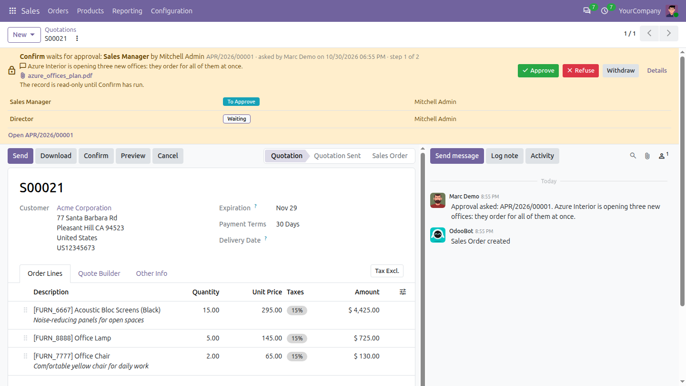
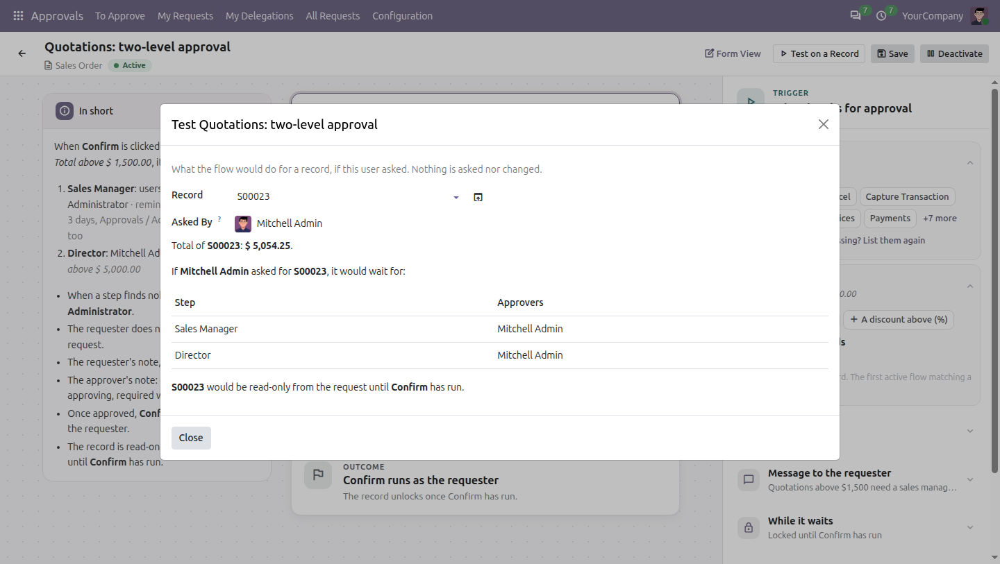
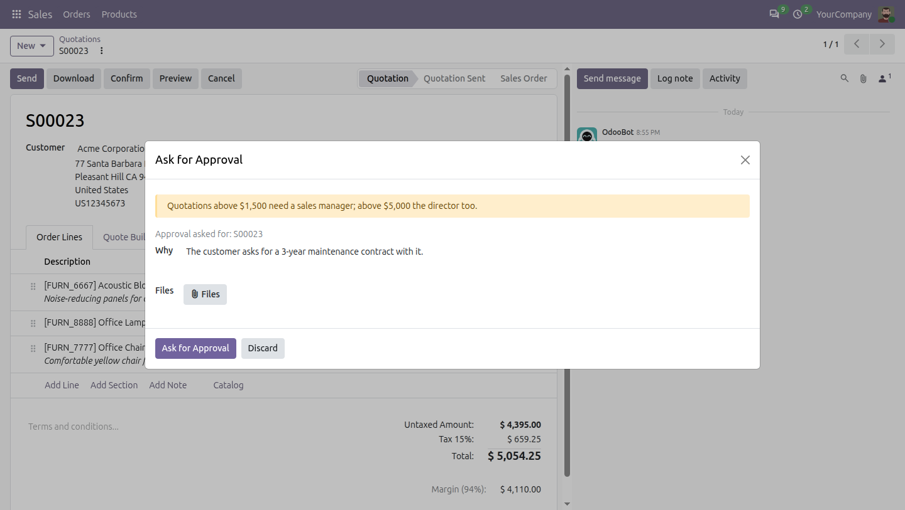
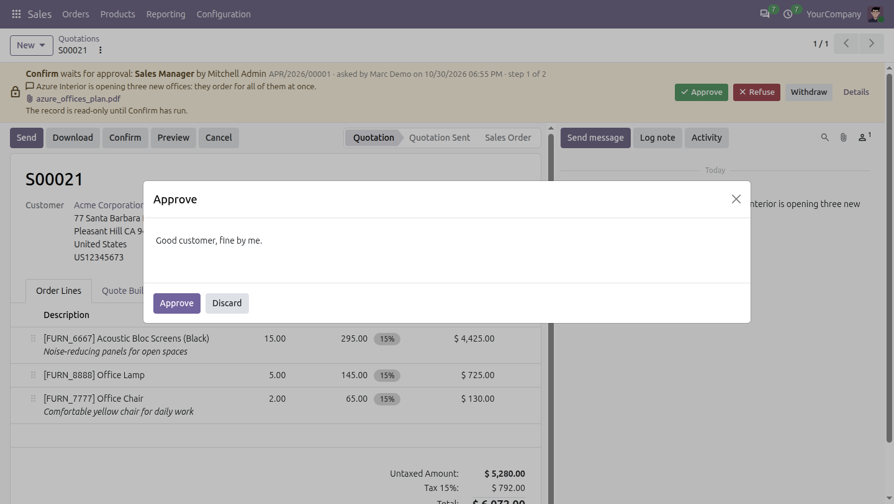
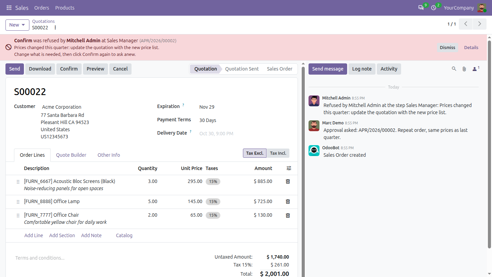
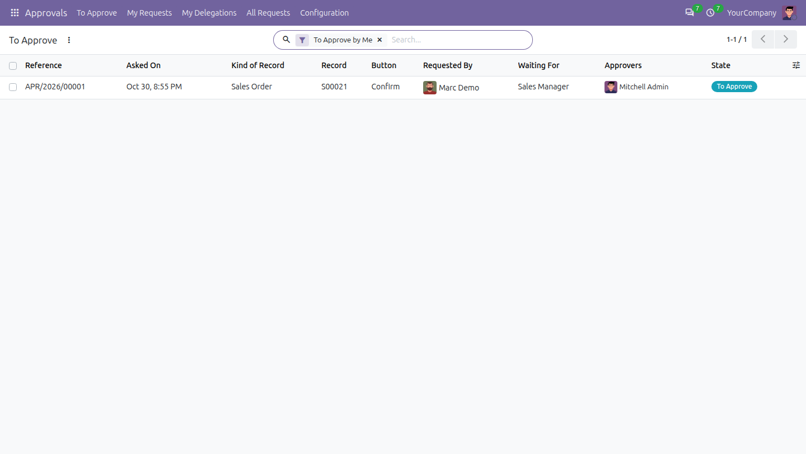

100% Free
Open source · LGPL-3
Odoo 20 Community
Approvals
Put any button of any app under approval, without code: confirming a quotation above an amount, posting a vendor bill, validating a transfer. The record waits, locked, until the right people approve it, then the button runs by itself.
Any app, any buttonApproval designerReady templatesRecord locked while it waitsNotes and filesAmounts in a currencySeveral approversDelegation and escalationExternal APIs too

A quotation above the limit waits for its approvals, locked; the approver answers right on it.
Any button
of any app, yours too
0 code
set up in a few clicks
3 ways
to name the approvers
100% free
open source, LGPL-3
Completely free. Your feedback makes it better.
No paid edition, no limits: the code is open (LGPL-3). Every feature is covered by automated tests. Tell us what works, what does not and what you miss.
How it worksClick, approve, done
Nothing changes for the people who use the button: they click it as always. Odoo asks the approval in their place and finishes the job once it is given.
1
Someone clicks the button
Confirm on a quotation above $5,000. Instead of confirming it, Odoo asks why, with files if needed, and asks the approval. The quotation is locked.2
The approvers decide
Each step in turn: the sales manager, then the director above $20,000. They get an activity, approve or refuse on the record, with a note.3
The button runs by itself
Once the last approval comes, Confirm runs as the person who clicked it. A refusal shows on the record, with the reason.
Use it everywhereOne app, every process that needs a yes
Approvals works on the buttons of any model: the apps of Odoo, the apps of others, and your own modules. The templates come ready for the most common ones.
🛒
Sales
› Quotations above an amount
› Discounts above a percentage
› Cancelling a confirmed order
📦
Purchase
› Purchase orders above a budget
› Two levels: buyer manager, then finance
› Orders from new vendors
💳
Invoicing
› Vendor bills before they are posted
› Credit notes above an amount
› Resetting a posted entry to draft
🚚
Inventory
› Validating a transfer
› Scrapping products
› Returns to vendors
👥
HR
› Loans, exits, certificates and requests
› The manager of the employee, then HR
› With the Odoo Mates HR apps
⚙️
Your own modules
› Any button of your forms and lists
› No code to add
› The flows follow your fields
FeaturesEverything an approval needs
Set up flow by flow, from simple to strict.
👇
Any button of any app
Confirm, Post, Validate, Cancel, or a button of your own module: the buttons of the forms and lists are listed, chosen in one click.💰
Amounts in a currency
Above an amount, compared in the currency of the flow: a record in another currency is converted first. A step can apply only above a higher amount.👥
Steps in turn
Specific people, the users of a group, or a person on the record, such as the salesperson or the team leader. A step can apply only to some records.✅
One, all, or a number of them
A step is approved by any one of its approvers, by all of them, or by two of three. The record shows how many approved so far.🔒
Locked while it waits
Read-only from the request until the button has run, or until an approval manager unlocks it. Nothing changes between the yes and the action.💬
Notes and files
The requester says why, with files; the approvers write why they approve or refuse. Each note is not asked, optional or required.⏰
Reminders and escalation
The approvers are reminded after some days; a step waiting too long is escalated to other people, who decide too.🌴
Delegation
An approver away names a substitute for the dates, who decides on their behalf; the approver still can. The first decision counts.
DesignerDesign it as a chain of cards
A flow reads from top to bottom: the button stopped, each step, the button running. Click a card to set it on the side; + inserts a step. The flow is described in plain words below the chain as you change it, and a card with something missing turns red, so a flow cannot be activated half done.

Test on a Record: whether the flow applies, which steps are skipped, who would approve. Nothing is asked.
TemplatesReady in a minute
New opens the gallery: approval above an amount, two-level approval, approval by the person responsible, approval of a discount, approval to cancel, or blank. They come ready for quotations, purchase orders, vendor bills and transfers, and guess the button, the amount and the person responsible of any other record. A flow starts inactive: check it, then activate it. Set up an approval, in the gear menu of any form, opens the gallery for that kind of record.
On the recordThe record waits, and says why
A banner at the top of the form says what the record waits for, which step and who approves it, with the note and the files of the requester. The approvers approve or refuse right there, the requester can withdraw, and Details lists the steps. A refusal shows who refused and why, until the requester asks again.

The requester says why, with files

The approver writes a note

A refused quotation, with the reason

To Approve: everything waiting for you, from every app
Built for controlAn approval nobody can go around
Approvals is checked by the server, not only by the screen.
🛡️
Locked for real
A locked record is refused from its form, a list, an import and the API, for everyone; its chatter, activities and followers still work.🔗
External APIs too
JSON-2, XML-RPC and JSON-RPC ask for the approval instead of running the button, as the web client does.📝
A full trail
Who asked, why, who approved or refused each step, when and on whose behalf: on the request and in the chatter of the record.🔍
Test before you trust
Test on a Record shows what a flow would do for any record and requester, before it is activated.
WhyFrom a click to a controlled decision
What changes the day Approvals is installed.
| Without approvals | With Approvals |
|---|
| Big orders | ✗ Confirmed by anyone who can click | ✓ Wait for the people you choose, above your amount |
| After the yes | ✗ The quotation can still change | ✓ Locked until the button has run |
| The reason | ✗ Lost in emails and chats | ✓ Written on the request, with the files |
| Approvers away | ✗ Everything waits for them | ✓ Their substitute decides, reminders and escalation |
| Setting it up | ✗ Code, or a module per case | ✓ A few clicks, from a template, for any button |
How to use it
1. Give the Administrator access of Approvals to the people who set up the flows.
2. Approvals, Configuration, Approval Flows, New: pick a template and the kind of record, or start from blank.
3. Set the cards in the designer, check the flow with Test on a Record, then Activate it.
4. From then on, clicking the button asks for the approval; the approvers answer on the record or in Approvals, To Approve.
Good to know
✓ Code running as the super user is not stopped, as Odoo intends.
✓ Other modules can approve their own documents with the same flows, e.g. the HR requests and loans of the Odoo Mates HR apps.
✓ Works with Odoo 20 Community and Enterprise. On Enterprise, it cannot be installed with the Approvals app of Odoo: use one or the other.

Keeping it simple